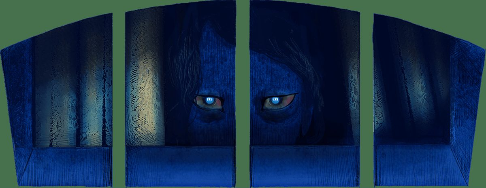
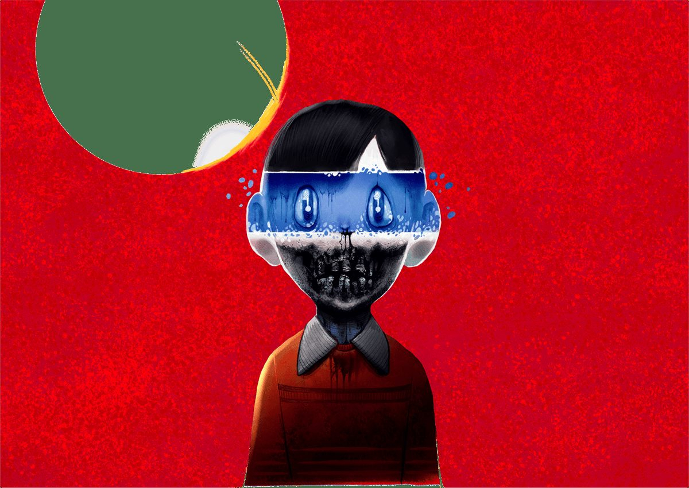
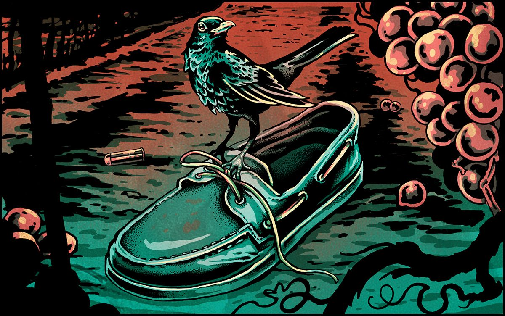
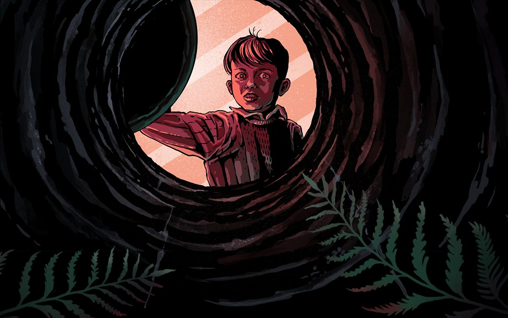

Aliento
Use auriculares para una mejor experiencia
Una pareja sin cultura y supersticiosa tuvo la desgracia de traer al mundo a una hija completamente loca.
No encontraron otra forma de lidiar con un ser tan fuera de la realidad que recluirla desde pequeña en la habitación que daba al callejón, cerca de la iglesia. Era otra época.
La habitación, un semisótano sumido siempre en la penumbra, tenía dos ventanas de apenas medio metro de alto, estrechas y con cuatro gruesos barrotes cada una. Desde la calle estaban al nivel del suelo y desde dentro debían estar donde la pared toca con el techo.
A ratos, durante las tardes de primavera y sobre todo en verano, las ventanas estaban abiertas. Veo aquella negrura enmarcada por las amarillentas cortinas de punto. Aunque sea verano, noto el fresco que sube de allí. El corazón, como un tambor, se desboca según nos acercamos. Hay que agarrarse con ambas manos a los barrotes y esperar. Esperar hasta sentir su aliento. Quien se suelte antes es un marica.
Porque si aguantas lo suficiente, vendrá. Ella siempre está pendiente de sus ventanas, de lo que intuye fuera. Y cuando descubra que estamos allí, tan cerca, irá a por nosotros y brincará hasta el techo para intentar arrastrarnos adentro, y aullará de aquella forma inhumana que se quedará resonando en tu cabeza incluso cuando ya estés lejos, recuperando el aliento y comentando atropelladamente lo que ha pasado, riendo nervioso, tosiendo y jurando por tu madre que has sido tú el que más ha aguantado agarrado a los barrotes.
Algunas noches, tiempo después, soñarás con ese callejón, las ventanas bajas con barrotes y las cortinas de punto amarillentas, y también soñarás con ella, pero sobre todo con su grito animal. Pero terminarás por olvidarlo.
Entonces pasarán muchos años más, la vida te habrá llevado lejos de allí. Una mañana de verano tu nieta te preguntará cómo te hiciste aquello, y bajarás la vista hasta la cicatriz, cinco largas marcas que recorren, casi paralelas, tu antebrazo. Le contarás sonriendo que ya no te acuerdas, y será verdad, y que debió pasarte cuando eras incluso más pequeño que ella, que seguramente fue jugando, que de crío eras un trasto. Que eran otros tiempos.
Pero esa noche soñarás con unas ventanas bajas con barrotes y unas cortinas de punto amarillentas, y también con unos ojos de una tristeza infinita.
Lo has olvidado, pero un día fuiste el niño que más aguantó, por mucho, agarrado a los barrotes.

Locutado y sonorizado por Jorge Gállego Loren. Escrito e ilustrado por Dumaker.
El Peso
Use auriculares para una mejor experiencia
Ese balón medicinal pesaba mucho, incluso para ser un balón medicinal.
¿Cuánto suelen pesar?
No tengo ni idea, y desde luego, nadie lo pesó jamás.
Pues bueno, ese balón, no podía ser otro, desnucó al Santiaguito Casares.
Lo dejó seco.
Desde ese día a todos nos quedó claro que un objeto pesado lanzado con la fuerza suficiente, en un ángulo preciso, y golpeando con diabólica exactitud donde la frente deja de serlo, es causa probable de muerte.
Que el Santiaguito fuera más canijo que un galgo y que en el momento del impacto solo tuviese ojos para la Raquel, que saltaba a la cuerda con admirable destreza, tampoco debió ayudar a evitar el fatal desenlace.
Juraría que el crujido de su cuello al partirse retumbó en todo el patio, pero reconozco que no lo puedo asegurar.
Se habló tanto sobre aquello que el relato de los hechos se iba adornando más y más gracias al impulso delirante de la imaginación infantil, hasta el punto que, a estas alturas, solo tengo meridianamente claro que al Santiaguito lo mató un balón.
Irónicamente medicinal.
Alguien hizo, incluso, una canción. Se cantaba en voz muy baja si no había profesores cerca, con la risita nerviosa del que sabe que lo que hace no está del todo bien. O directamente, que está fatal.
Decía así, más o menos:
«Santiaguito bonito,
Por qué no mirabas,
Al balón que venía,
Volando sin alas.
Santiaguito bonito,
No has de estudiar,
Al examen de mañana,
No vas a llegar.
Santiaguito bonito,
Cómo lograste,
Crujir sin ser rama,
Morir y mearte.»
Ah, ¿y qué creéis que se hizo con aquel balón medicinal?, ¿se tiró a la basura?, ¿o tal vez se cambió por otro que no tuviera semejantes antecedentes?
Ni una cosa ni otra, es que no eran tiempos de tirar nada o comprar por comprar. Se quedó en el colegio, donde seguramente ya llevase décadas.
Eso sí, desde entonces su uso como elemento estrella en la clase de gimnasia decayó notablemente.
Recuerdo bien cómo nos escabullíamos para ir a echarle un vistazo furtivo a la habitación donde lo guardaban. Todavía lo puedo ver allí, en la penumbra, desterrado a una esquina y medio tapado por una colchoneta polvorienta, encajonado entre el plinto y el potro, y ajeno al mérito de haber acortado tan significativamente la vida de Casares.
Ahora suena ridículo, pero para nosotros era mucho más fascinante escaparnos para admirar clandestinamente el objeto maldito que poder ver cada día en el recreo a Gustavo Buendía, el mostrenco de octavo que había lanzado con inusitada precisión el balón de marras y que, dicho sea de paso, parecía estar tan afectado por lo ocurrido como un camión cisterna circulando por una carretera de Cuenca se entristece por el mosquito al que acaba de hacer puré.
Creía haber olvidado por completo la historia del Santiaguito Casares. Hasta hoy, cuando mi sobrina, que va a este mismo colegio, me ha preguntado si sé cuánto pesa un balón medicinal, porque el que usan en gimnasia pesa mucho y parece, además, viejísimo.
Mañana, sin falta, me pasaré por allí.

Locutado y sonorizado por Jorge Gállego Loren. Escrito e ilustrado por Dumaker.
Vino Muerto
Use auriculares para una mejor experiencia
Para Borja y Paula, que no habían catado campo en su vida, al menos campo del de verdad, la estampa era impresionante.
Noche de agosto completamente despejada, luna llena, un exuberante viñedo que se extiende hasta donde alcanza la vista, y el enólogo y su cuadrilla de trastornados, buscándolos escopeta en mano.
Ni Cala Benirrás ni hostias. Toma fin de semana inolvidable.
Porque a estas alturas de la madrugada, si las cosas se hubieran hecho bien, el Borjita y la Pau deberían llevar ya unas cuantas horas muertos. Exactamente seis.
En cambio, reptaban ahora, malheridos y aterrados, en ese mar vegetal que parecía no tener fin. Por desgracia para la parejita, la hora de su sacrificio, que esa misma tarde parecía imposible de aplazar, resultaba ser ahora, que habían logrado escapar, del todo flexible, siempre y cuando la batida terminase felizmente, es decir, con ellos dos destripados sobre el altar que a tal efecto se había construido en la parte más profunda y antigua de la bodega. La única norma inapelable era, ahora, que debía hacerse antes del amanecer, o pasarían cosas.
Más cosas, quiero decir.
Y ahí va Borja Parada Villagarcía, arrastrándose entre terrones de arena, bañado en sangres (sí, en plural), con un solo náutico y echando en falta cinco piezas dentales que, pensó, debían estar ahora en el suelo de la sala de barricas, y no creyendo posible que ni él ni su Paulita querida fueran a librarse de nuevo.
Lo de esa tarde había sido un milagro, uno de esos por los que te canonizan, te beatifican, te santifican y te construyen una catedral gótica de cinco naves.
Y efectivamente, a la vista de los acontecimientos que en breve iban a desencadenarse, parecía innegable que habían debido consumir toda la fortuna que tenían asignada de por vida, porque Borja, en su esperpéntico reptar de foca monje espasmódica viña a través, tuvo la desgracia de unir su destino al de un pequeño nido de mirlo común, al que tuvo a bien pegar un manotazo involuntario, desencadenando una serie de acontecimientos que comenzaron con dos mirlos levantando el vuelo escandalosamente, continuaron con una brevísima y patética persecución, y terminaron con el enólogo apretando el gatillo de su Sauer SL5, que es un arma de caza fabulosa que lo mismo deja seco a un pobre corzo que le vuela medio cráneo a Paula de los Ríos Acosta.
Ah, también serviría, de sobra, para mandar al otro barrio a ese espécimen único de Borja Matritensis común, pero para él había otros planes, a un paseo de allí, en la bodega.
La vendimia comenzó, dos semanas después, sin mayor contratiempo. La cosecha fue abundante y de una calidad excepcional. Los vinos fruto de aquella campaña fueron un punto de inflexión para la bodega, y en los meses y años siguientes obtuvieron decenas de premios, incluidos algunos de los más prestigiosos del mundo.
Esta vendimia prodigiosa, como se llegó a catalogar, sirvió también para poner en el mapa a esa remota región, e hizo que la pequeña y antiquísima bodega familiar fuese, desde entonces, referencia destacada, especialmente por sus inigualables vinos de crianza con mucho, mucho, mucho cuerpo.
En su página web puedes reservar, en la sección de enoturismo, un paquete indicado especialmente para las jóvenes parejas de enamorados: un fin de semana inolvidable conociendo, de primera mano, el apasionante mundo del vino y todos los secretos de una bodega centenaria.

Locutado y sonorizado por Jorge Gállego Loren. Escrito por Dumaker. Ilustrado por Alabamakiller.
El Aljibe
Use auriculares para una mejor experiencia
Te confieso que el viejo aljibe de esta casa me da miedo.
No siempre fue así, claro, pero desde el momento en el que esa sensación me caló, no ha dejado de asfixiarme.
Pero verás que no es para tanto.
Ahí está, acércate, justo al final del pasillo, en el recodo. Se extiende por debajo, es profundo.
Lo que ves, encima de esa repisa azulejada sobre la que reposa un tablón de madera mil veces repintada, ahora de rojo encarnado, es la cubierta. Cuidado que engaña, pesa más de lo que parece, te lo digo yo.
¿Ves que hay encima un tapete y una jarra de porcelana? Si piensas asomarte al aljibe, tendrás que retirarlas con cuidado. Puedes dejarlas ahí, sobre esa mesa.
Diría que es la primera vez, en mucho, mucho tiempo, que alguien se anima a echar un vistazo.
Este pasillo, la casa, incluso el pueblo, son ahora oscuros y fríos, funestamente mudos, pero hubo un tiempo en el que el suelo que pisas pertenecía a un hogar que nada tenía que ver con este siniestro decorado.
Y en esos días, en el bullicioso trajín de lo cotidiano, ocurrió algo. Sí, exactamente aquí, en el aljibe.
Esa tarde de verano, primer día de las fiestas del pueblo, todo cambió. Y no de forma gradual, no poco a poco, no como esos cambios que se van produciendo, silenciosos, sin avisar.
En absoluto.
Fue drástico, brutal, binario. Un fotograma antes la realidad era una y un solo fotograma después todo estaba mal. Todo estaba roto. Un súbito eclipse que duró siempre.
Eso es, levanta la cubierta con cuidado, puedes apoyarla en el suelo y hacerla rodar hasta la pared. Inclínala un poco para que no se resbale.
Seguro que ya notas el frío que emana de la boca del aljibe. Todos los que miran dentro quedan sobrecogidos, ¿recuerdas que te he dicho que es profundo? No imaginas cuánto.
Asómate, no tengas miedo. Inclínate más, hombre.
No sabes cómo ansío ver una cara.
Ven, encuéntrame dentro del aljibe.
Maravíllate del abismo.

Locutado y sonorizado por Jorge Gállego Loren. Escrito por Dumaker. Ilustrado por Alabamakiller.